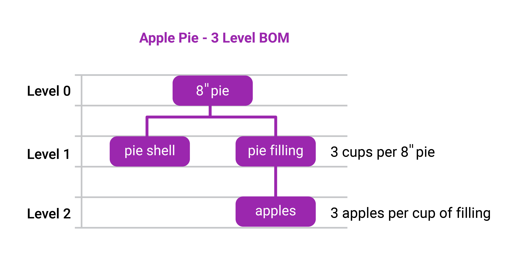

Remember our apple pies from earlier units? Let’s follow the business planning processes through using apple pies.
At the executive planning committee, the company looks at its 5 year plan and observes that they have planned to improve the bottom line by $ 52,000 a year for the next few years. Accounting has determined that we make $1 net profit per pie next year. Quick math: we must make an extra 52,000 pies per year. They examine the orchard production capacity, the processing facilities, etc. and determine it has enough infrastructure in place to accomplish this for the next few years.
At the gathering of Vice-presidents and directors of all the functional areas they review the forecasts set by the executive group and set to planning the sales and production needs. Sales point out that pie sales are seasonal…sales are more likely in cooler weather. Production points out that the orchards are capable of producing the needed increase and that the pie production can handle the demand with a mixed production schedule. They suggest a S & OP plan for the next year reflecting the seasonality demands as follows (in 1,000’s):
| Jan | Feb | Mar | Apr | May | Jun | Jul | Aug | Sep | Oct | Nov | Dec | |
|---|---|---|---|---|---|---|---|---|---|---|---|---|
| Apple Pie Family | 4 | 6 | 4 | 4 | 4 | 4 | 2 | 3 | 5 | 6 | 6 | 3 |
The production scheduling group, forecasting for February, sees that Marketing has planned a promotion, “Sweets for the Sweet” in the second week of February. They are planning by the actual products which are 8”, 9” and 10” pies. They have not received any outside customer orders so this is the schedule they produce.
| Finished Goods | Week 1 | Week 2 | Week 3 | Week 4 |
|---|---|---|---|---|
| 8" pies | 250 | 500 | 250 | 250 |
| 9" pies | 500 | 2,000 | 500 | 500 |
| 10" pies | 250 | 500 | 250 | 250 |
| Total | 1,000 | 3,000 | 1,000 | 1,000 |
In our recipe (Bill Of Material), we require 3 cups of filling for each 8 pie, 4 cups for each 9 “ pie and 5 cups for each 10” pie. Each cup of filling requires 3 apples from our orchard. For each pie size this recipe would be called a 3 level BOM, with the top level (level 0) being our finished end item. The next level (level 1) would include purchased components (plates, cartons) and ingredient groups (pie filling, crust), with the last level (level 2) represented by the components in the ingredient groups (apples in the pie filling). You would have one BOM for each size of apple pie.
The apple requirements for Week 2 in February would be:
8 “ pies: 500 pies x 3 cups filling x 3 apples per cup = 4,500 apples
9 “ pies: 2,000 pies x 4 cups filling x 3 apples per cup = 24,000 apples
10” pies: 500 pies x 5 cups filling x 3 apples per cup = 7,500 apples
Total = 36,000 apples are required for Week 2 in February. At this level, it is dependent demand and it can be calculated. Our MRP computerized planning system would then calculate for us how many apples we require for all 52 weeks in the business plan. We would then check our capacity – the number of trees in the orchard x apples per tree to see how many more we need. Remember the 2 to 10 year Strategic Business Plan time frame? It all flows from the initial plan. Seems to work out!
The forecasting was done (S&OP and MPS) then the needed materials were assessed (MRP). At this last stage, the execution and control stage, the PAC group schedule the actual production resources (labour, production, inventory on-hand) to get the final product finished. The Purchasing group order any needed parts of the planned orders and followup or expedite any materials that haven’t arrived as planned to ensure everything is flowing.